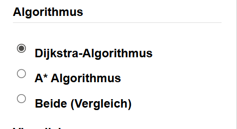

Benutzerhandbuch
Routenberechnung mit dem Dijkstra und A* Algorithmus
Inhaltsverzeichnis
Abbildungsverzeichnis
- Screenshot Header
- Screenshot Start & Ziel
- Screenshot Algorithmen
- Screenshot Visualisierung
- Screenshot Routeninformationen
1 Menüelemente erklärt
Im oben Bereich der Anwendung befindet sich der Header. In diesem steht zum einem der Name der Anwendung
"Routenberechnung - Dijkstra & A*" und zum anderen befinden sich dort Links zu wichtigen Dokumentationen des Projekts, wie z.B. die Entwicklerdokumentation und dieses Benutzerhandbuch. (siehe Screenshot Header)
Header:
- JSdoc verlinkung: Ein Link zur Dokumentation des Projekts, erstellt mit JSdoc
- Benutzerhandbuch: Ein Link zu diesem Benutzerhandbuch, damit Nutzer schnell darauf zugreifen können

Start & Ziel
- Startpunkt: Der Startpunkt legt fest, an welchem Punkt die Routenberechnung anfangen soll
- Endpunkt: Der Endpunkt legt das Ziel für die Routenberechnung fest.

Algorithmus
- Dijkstra-Algorithmus: Dieses Feld sagt der Routenberechnung dass der Dijkstra-algorithmus zur Berechnung genutzt werden soll
- A* Algorithmus: Dieses Feld sagt der Routenberechnung dass der A* Algorithmus zur Berechnung genutzt werden soll
- Beide (Vergleich): Dieses Feld sagt der Routenberechnung es soll beide Algorithmen zur Berechnung nutzen und diese miteinander vergleichen

Visualisierung
- Zwischenschritte anzeigen: Aktiviert die Visualisierung der Zwischenschritte während der Routenberechnung
- Zeit zwischen Schritten: Legt die Zeit in Millisekunden fest, die zwischen der Visualisierung der Zwischenschritte liegen soll
Berechnung starten: Startet die Routenberechnung mit den ausgewählten Einstellungen

Routeninformationen
- Distanz: Zeigt die Länge der berechneten Route an
- Berechnungszeit: Zeigt die Zeit an, die für die Berechnung der Route benötigt wurde
- Untersuchte Knoten: Zeigt die Anzahl der Knoten an, die während der Berechnung besucht wurden

2 Fehlermeldungen
In diesem Abschnitt werden alle möglichen Fehlermeldungen erklärt, die während der Nutzung der Routenberechnung auftreten können:
- Ausgewählte Start- oder Zielpunkt-ID ist ungültig.: Diese Fehlermeldung erscheint, wenn die ausgewählten Start- oder Zielpunkt-IDs nicht gültig sind, z.B. wenn sie außerhalb des Bereichs der verfügbaren Punkte liegen.
- Bitte wählen Sie mindestens einen Algorithmus aus.: Diese Fehlermeldung erscheint, wenn der Benutzer versucht, die Routenberechnung zu starten, ohne einen Algorithmus auszuwählen.
- Start- und Zielpunkt müssen unterschiedlich sein.: Diese Fehlermeldung erscheint, wenn der Benutzer versucht, die Routenberechnung zu starten, aber der ausgewählte Startpunkt und Zielpunkt identisch sind.
3 Quellenangaben
- Dijkstra-Algorithmus: Wikipedia - Dijkstra-Algorithmus
- A* Algorithmus: Wikipedia - A* Algorithmus
- Node.js: Node.js offizielle Webseite Zur umwandlung von Markdown in HTML und zur Erstellung der Entwicklerdokumentation
- JSdoc: JSdoc offizielle Webseite Zur erstellung der Entwicklerdokumentation
- Cypress: Cypress offizielle Webseite Zur Erstellung von End-to-End Tests (Testing der grafischen Benutzeroberfläche)
- Showdown: Showdown offizielle Webseite Zur Umwandlung von Markdown in HTML
- Showdown Markdown Syntax: Showdown Markdown Syntax Die Markdown Syntax, die von Showdown unterstützt wird